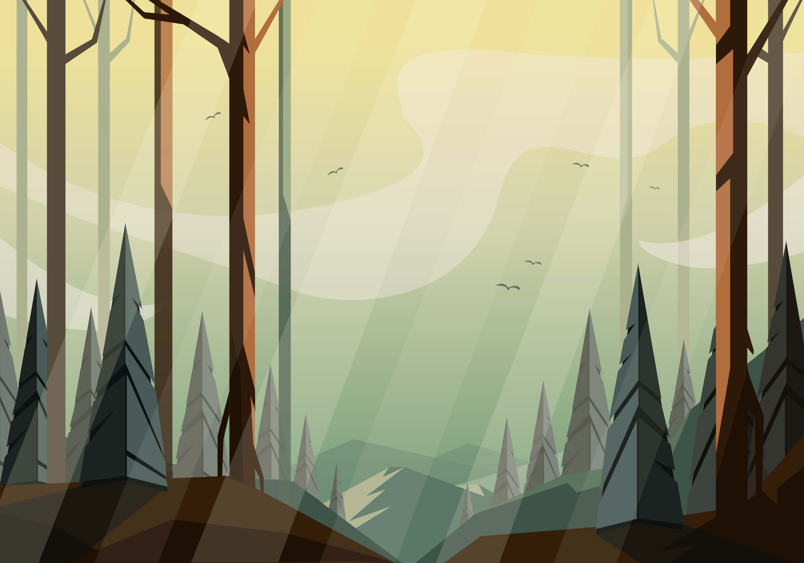

230 U$D
Procreate te ofrece la oportunidad de llevarte tu estudio a todas partes y sentir el poder de la creatividad en la palma de tu mano. Conocerás todas las herramientas y opciones que la app tiene para ofrece, además de aprender a usarlas para desbloquear infinitas posibilidades de diseño.
Procreate
220 U$D
Este curso es para cualquier persona que quiera mejorar su técnica de ilustración a través del uso constante de un cuaderno de bocetos. Necesitarás un cuaderno de bocetos, un lápiz o un bolígrafo de tinta, una goma de borrar, una regla y acuarelas o marcadores.
Sketching
230 U$D
Dominarás herramientas claves en Illustrator, como el lápiz y el pincel. Una vez entiendas su funcionamiento, verás las diferentes formas de las que dispones para digitalizar una imagen por medio de vectores. Necesitarás un ordenador con Windows 7 o macOS 10.12 con Adobe Illustrator CC.
Illustrator
Procreate

Este curso de ilustración es de nivel introductorio porque te enseñará a dibujar libremente y sentará las bases de cómo encontrar tu estilo para ser un ilustrador profesional. Partirás desde cero conociendo conceptos básicos y diferencias entre términos como el arte, el diseño y la ilustración.Si eres uno de esos que desborda creatividad, o simplemente necesitas un empujón para ser creativo, en este curso podrás poner a prueba tu talento y dejarte llevar a través de los ejercicios prácticos que Val tiene preparados para ti. Al finalizar este curso de ilustración serás un ilustrador capaz de crear ilustraciones únicas, con un estilo que despierte empatía y recordación en tu público. El estilo personal es parte de la identidad y muestra cómo un ilustrador percibe al mundo. Incluso es una forma directa de interactuar con su público y ser recordado frente a otros profesionales. Es por eso que en este curso de ilustración a distancia, ofrecido por Laualú y por la diseñadora gráfica e ilustradora Lucía Soraire, aprenderás encontrar tu estilo y crear personajes únicos utilizando técnicas de ilustración tradicionales y digitales. Este curso de ilustración te ayudará a que trabajes tu lado creativo. Lucía compartirá contigo parte de su proceso creativo, cómo busca inspiración y cómo le da su toque personal al personaje. Te sentirás libre de explorar diferentes tipos de ilustración usando al máximo tu creatividad para alcanzar ese estilo de ilustración que tanto deseas. Con esto ya estarás listo para conquistar el mundo de la ilustración y explotar tu talento para convertirlo en una forma de vivir. Descubrirás tu estilo de ilustración en base a métodos y ejercicios que te ayudarán a desarrollar un estilo propio y diferenciarte de otros ilustradores. Conocerás los tipos de ilustración, los distintos estilos y cómo estos te harán único como ilustrador. Aplicarás técnicas tradicionales de ilustración haciendo boceto en lápiz y aprendiendo a cómo usar acuarelas. En este curso de ilustración conocerás cuál es la importancia del estilo propio a través de ejercicios para explotar tu creatividad ilustrando personajes a tu manera. También serás capaz de manejar técnicas de ilustración digital haciendo uso de uno de Procreate, uno de los programas de ilustración y diseño que tiene el iPad. Como proyecto final, podrás hacer tu propio starter pack utilizando el estilo que has desarrollado a lo largo de este curso de ilustración.
Sketching

El curso de Sketchbook: Dibujo botánico es de nivel introductorio, por lo que no necesitas experiencia previa para inscribirte. Este curso no se centrará en ninguna técnica de dibujo específico, sino en explorar las formas, colores y texturas botánicas para mejorar en ilustraciones propias. El curso de dibujo botánico está dirigido a personas creativas, dibujantes y profesionales de la ilustración que deseen estudiar composiciones botánicas y llevar un registro concreto de las posibilidades de creación. Organizar ideas de ilustración en un sketchbook es una de las mejores maneras para dejar correr tu creatividad, desarrollar la observación y comenzar a crear piezas más complejas e interesantes. En este curso de dibujo botánico en sketchbook, aprenderás a crear un diario botánico que te permita almacenar tu proceso creativo y que sirva como un registro de ilustraciones botánicas propias. Aprenderás a estudiar las composiciones botánicas para replicar formas, patrones y texturas naturales de las hojas. Entenderás cómo está compuesta una paleta de color clásica para ilustraciones botánicas y cómo conseguir el color ideal. Estudiarás las siluetas y colores más comunes en botánica, así como también la textura en hojas frescas, secas o rotas y crearás un sketchbook botánico ordenando las composiciones individuales, complejas y usando elementos de journaling. Alexis Anger, profesor de este curso de creación de sketchbook, te acompañará en cada una de tus pinceladas y elección de colores. Junto a ella, realizarás estudios botánicos y ejercicios de observación con los que lograrás elegir una paleta de colores botánica y aplicar textura a tus ilustraciones. Al finalizar el curso, habrás logrado crear tu primer sketchbook botánico y, como proyecto final, deberás hacer una ilustración botánica propia aplicando todo lo aprendido en el curso. Todo el contenido es 100% en línea, con clases pregrabadas a las que tendrás acceso luego de la compra del curso. ¡Puedes iniciarlo y desarrollarlo a tu propio ritmo! Posterior a que realices la compra vas a poder acceder a las clases cuando y donde quieras. El curso se queda en tu cuenta de Laualú para siempre. Luego de que termines el curso, debes de desarrollar el proyecto y publicarlo con la comunidad. El profesor del curso y equipo lo revisará y si todo va bien, se te emite la certificación para que lo descargues desde tu cuenta.
Illustrator
En este curso de Illustrator online conocerás las posibilidades creativas y de diseño que te ofrece el programa, aprenderás cómo usar Illustrator desde lo más básico hasta los tips y maneras para hacer tu proceso creativo más eficiente. A lo largo de los módulos haremos un recorrido completo desde la interfaz de Illustrator —con su pantalla de inicio y el espacio de trabajo— hasta las herramientas principales, pasando por el diseño con vectores creados desde cero o que usan fotografías de referencia. En esta ocasión tu profesor será Laureano Engulian, un experto de los diseños en Illustrator y el uso del programa con más de 15 años de experiencia con esta herramienta. Él ha trabajado con muchas marcas en México y Latinoamérica, y estará dispuesto a enseñarte todo lo que sabe y contarte sus tips más útiles. El curso de Illustrator te enseñará para qué sirve Illustrator, tips útiles para trabajar de manera eficiente y acercarte a sus herramientas para que conozcas su funcionamiento y puedas ver las posibilidades creativas que este programa ofrece. Aprenderás a usar el programa desde cero aún sin saber ilustrar y a manejar funcionalmente las principales herramientas de Illustrator como la pluma, herramientas color y herramientas de textos. Entenderás el sistema de dibujo y diseño en Illustrator comprendiendo la diferencia entre vectores y mapas de bits. Descubrirás para qué sirve Illustrator, sus posibilidades creativas y de diseño. Desarrollarás habilidades para saber cómo vectorizar una imagen correctamente. Diseñarás tu propio póster personalizado utilizando las herramientas básicas de Illustrator. Aprenderás la lógica de ilustrar en Illustrator, además del manejo básico de herramientas esenciales. En este curso lograrás diseñar e ilustrar un póster o afiche personalizado incluso si no sabes dibujar. Entenderás cómo funciona la vectorización, qué es una imagen vectorial y las características de un vector para luego aprender cómo vectorizar imágenes correctamente. Cerraremos con las conclusiones y algunos consejos extra para apoyar el proceso creativo y el inicio del camino en el mundo de Illustrator, el diseño y la ilustración.